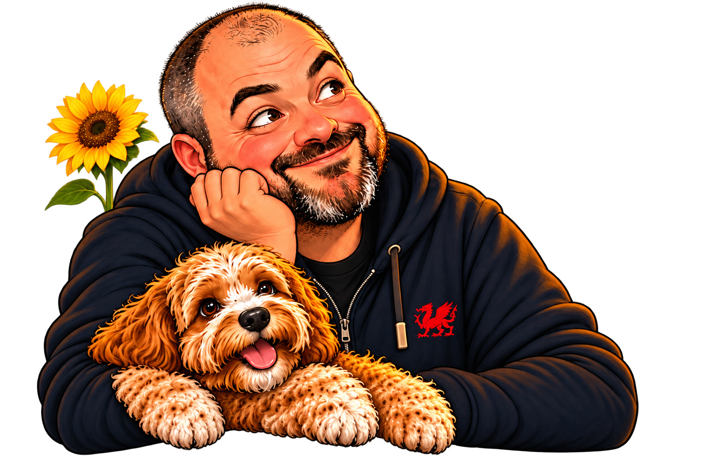

Space to read.
Unpack the paragraph.
Add manageable paragraph breaks while preserving the original wording.
Links, quotations and code stay protected while eligible prose gains space.
Try the space example ↗Formatting tool guideDifferent minds. Welcome here.
A little less overwhelm. A little more you.
Diffyn 2.0 helps you understand, begin and return.
Your preferences. Your pace. Your words.
Same words. A different layout.
Open the document. Check the title.
Save your changes. Close the document.
An existing sequence, kept in order.
A phrase can mean more than one thing.
Let's touch base tomorrow.
Possible meaning: speak or check in.
Check the context before changing the wording.
Interactive examples · sample text only · no AI call

Take your time.
Everything will still be here.
A small connection. More possibility.
The Model Context Protocol (MCP) lets an AI client use external tools, prompts and reference material.
Diffyn runs locally, giving compatible clients ways to adapt communication to your stated preferences.
Explore the connectionThe tool drawers
Open a drawer. Pick what helps.
Add manageable paragraph breaks while preserving the original wording.
Links, quotations and code stay protected while eligible prose gains space.
Try the space example ↗Formatting tool guideFollow an existing sequence, update your progress and return to the next available step.
The checklist preserves supplied steps. Planning prompts help your AI client propose a starting point.
Try the steps example ↗Checklist tool guideReview English idioms and optional checks for vague timing and references.
The original stays intact; context decides whether a phrase needs changing.
Try the meaning example ↗Clarity tool guideNine local tools support the details that matter.
Resolve your preferences for this task, with clear choices about structure, tone and detail.
Compare important details in an original and a rewrite, including numbers, links and protected passages.
Find broken dependencies and source references in a supplied sequence.
Create a portable card with your goal, recorded progress, blockers and next action.
See exact calculations, percentage changes and unit conversions with any rounding explained.
Check a response against the presentation requirements you selected.
Prompts guide your AI client. Six workflow skills bring the tools and guidance together. Your client controls model use and data handling.
Your connection notebook
Rust 1.99+ and a client that supports local stdio MCP.
A fresh start
Run the installation command to build the tagged release with Cargo.
Install Rust first if you need it ↗Replace the example command with your executable's absolute path.
Cargo usually installs to ~/.cargo/bin/diffyn; Windows uses diffyn.exe.
Reload its MCP configuration, then discover the tools, prompts and guides.
cargo install --git https://github.com/nathcymru/Diffyn --tag v2.0.3 --locked diffynRequires the published v2.0.3 tag. Downloads dependencies during installation.
{
"mcpServers": {
"diffyn": {
"command": "/absolute/path/to/diffyn",
"args": []
}
}
}Replace the path. Syntax varies by client.
Local stdio only. Hosted HTTP clients need a different transport.
You can select and copy the commands directly.
Different + Diffinio
No diagnosis needed. Your expressed preferences come first.
Diffyn’s local tools preserve source information and make changes visible for review.
Sunflowers remind us that not every disability is visible. There is space here for needs that others may not see.
Diffyn is an engineering project, not a diagnostic or clinically validated intervention. Your AI client's data policies still apply. Research and limits.